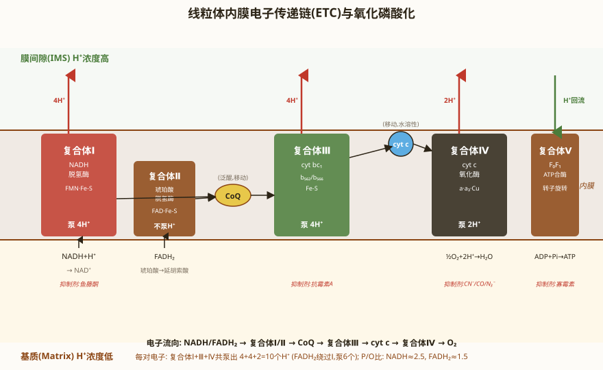
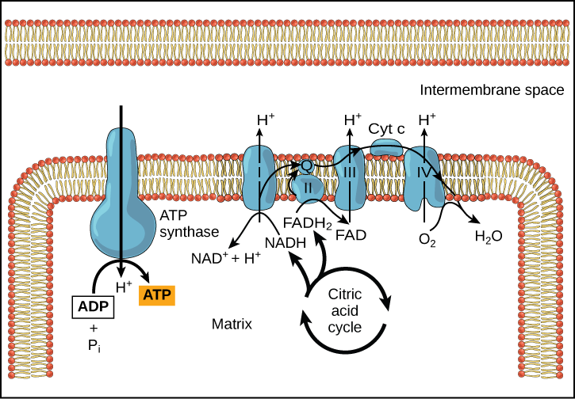

线粒体概述与超微结构
线粒体（mitochondria，单数 mitochondrion）是真核细胞进行氧化磷酸化的主要场所，被称为"细胞的动力工厂"。1890 年 Richard Altmann 首次描述，1898 年 Carl Benda 命名为"mitochondrion"（希腊语 mitos=线 + chondrion=颗粒）。线粒体普遍存在于真核细胞中（除哺乳动物成熟红细胞外），数量从几个到数千个不等。
线粒体的超微结构：
- 外膜（outer membrane）：光滑，含有丰富的孔蛋白（porin，VDAC，电压依赖性阴离子通道），允许分子量 < 5000 Da 的分子自由通过。外膜还含有线粒体融合蛋白（Mfn1/2）和 TOM 复合体的部分组分。
- 膜间隙（intermembrane space）：外膜和内膜之间的空间，含有细胞色素 c（cyt c）、凋亡诱导因子（AIF）等。质子被泵入膜间隙，形成质子动力势。
- 内膜（inner membrane）：高度折叠形成嵴（cristae），大大增加了膜面积。内膜含有电子传递链（ETC）复合体 I-IV、ATP合酶（F₀F₁-ATPase，Complex V）、以及多种转运蛋白（如 ADP/ATP 转位酶、磷酸转运蛋白）。内膜的心磷脂（cardiolipin）含量高（~20%），使内膜对离子不通透。
- 基质（matrix）：内膜包围的空间，含有三羧酸循环（TCA cycle）酶系、脂肪酸 β-氧化酶系、线粒体 DNA（mtDNA）、线粒体核糖体（55S）、tRNA 和各种离子。基质中还含有高浓度的基质颗粒（富含 Ca²⁺ 和 Mg²⁺）。

线粒体的半自主性
线粒体是半自主性细胞器，拥有自己的遗传系统（mtDNA），但大部分线粒体蛋白质由核基因组编码、在细胞质核糖体合成后输入。
人类线粒体基因组（mtDNA）：
- 环状双链 DNA，长约 16.6 kb（16,569 bp），共 37 个基因。
- 编码：13 种多肽（均为呼吸链复合体的亚基——复合体 I 的 7 个亚基、复合体 III 的 1 个亚基 cyt b、复合体 IV 的 3 个亚基、复合体 V 的 2 个亚基）、22 种 tRNA（足以识别所有密码子，通过摆动假说）、2 种 rRNA（12S 和 16S rRNA）。
- 特征：无内含子，基因排列紧密；两条链均有编码——重链（H 链）和轻链（L 链）；D-loop 区（displacement loop）是复制和转录的调控区，无编码基因。
- 遗传密码的偏离：线粒体使用与核基因组略有不同的遗传密码——UGA 编码 Trp（而非终止）、AUA 编码 Met（而非 Ile）、AGA/AGG 为终止密码子（而非 Arg）。
线粒体核糖体：55S（原核型），由 39S 大亚基 + 28S 小亚基组成。与原核细胞 70S 核糖体相似，但 rRNA 较短、蛋白质组分较多。线粒体核糖体对氯霉素敏感（抑制原核型核糖体），对放线菌酮不敏感（抑制真核型 80S 核糖体）。
线粒体母系遗传：受精时精子线粒体被降解（泛素化标记），合子的线粒体全部来自卵细胞。因此 mtDNA 呈母系遗传（maternal inheritance）。Leber 遗传性视神经病变（LHON）是典型的 mtDNA 突变导致的母系遗传疾病。
线粒体蛋白质的跨膜转运
线粒体蛋白质的输入是一个高度复杂的过程。人类线粒体含有约 1500 种蛋白质，其中 99% 以上由核基因编码，在细胞质核糖体合成后输入线粒体。每种蛋白质的输入需要定位信号和转运复合体。
线粒体定位信号：
- 基质定位信号（matrix targeting signal, MTS/pre-sequence）：N 端 15-50 个氨基酸，富含 Arg、Leu、Ser 和少量酸性氨基酸，形成两亲性 α-螺旋。输入基质后被线粒体加工肽酶（MPP）切除。
- 内膜蛋白定位信号：多个内部信号，包含一个或多个跨膜区段。
- 外膜蛋白定位信号：如 β-桶状蛋白（porin）含有 C 端的 β-信号（β-signal）。
主要的转运复合体：
- TOM 复合体（translocase of the outer membrane）：位于外膜，是大多数线粒体蛋白质进入的门户。核心组分包括 Tom40（β-桶状蛋白，形成转运通道）、Tom20/Tom70（受体，识别不同的前体蛋白）。
- TIM23 复合体（translocase of the inner membrane 23）：将含 MTS 的前体蛋白转运至基质。需要内膜两侧的质子动力势（Δψ）驱动。与 PAM（presequence translocase-associated motor）协作，由 mtHsp70（基质中的分子伴侣）水解 ATP 拉动前体蛋白进入基质。
- TIM22 复合体：负责将多次跨膜的内膜蛋白（如 ADP/ATP 转位酶）插入内膜。
- SAM 复合体（sorting and assembly machinery）：位于外膜，帮助 β-桶状蛋白（如 porin, Tom40）在外膜正确折叠和插入。
蛋白质输入过程：前体蛋白在细胞质分子伴侣（Hsp70）保持未折叠状态→TOM 复合体识别并转运通过外膜→在膜间隙被小 Tim 蛋白护送→TIM23 或 TIM22 复合体转运通过内膜→基质中 mtHsp70 拉动、MPP 切除信号肽→Hsp60 辅助折叠。
氧化磷酸化概述
氧化磷酸化（oxidative phosphorylation, OXPHOS）是线粒体中最核心的能量代谢途径，包括电子传递链（ETC）和 ATP 合酶两部分。NADH 和 FADH₂ 携带的电子通过 ETC 传递给 O₂，释放的能量用于将质子（H⁺）从基质泵至膜间隙，建立质子动力势（proton motive force, PMF），驱动 ATP 合酶合成 ATP。
电子传递链的四个复合体：
- 复合体 I（NADH 脱氢酶，NADH:ubiquinone oxidoreductase）：接受 NADH 的电子，传递给泛醌（CoQ/ubiquinone）。含 FMN 和铁硫簇（Fe-S）。将 4 个 H⁺ 从基质泵至膜间隙。抑制剂：鱼藤酮（rotenone）、巴比妥类药物。
- 复合体 II（琥珀酸脱氢酶，succinate dehydrogenase）：三羧酸循环的酶，接受 FADH₂ 的电子，传递给 CoQ。不泵 H⁺（是唯一不泵质子的复合体）。是 TCA 循环和 ETC 的连接点。
- 复合体 III（细胞色素 bc1 复合体，cytochrome bc1 complex）：接受 CoQH₂ 的电子，通过 Q 循环传递给细胞色素 c。含细胞色素 b、c1 和 Rieske 铁硫蛋白。将 4 个 H⁺ 泵出。抑制剂：抗霉素 A（antimycin A）。
- 复合体 IV（细胞色素 c 氧化酶，cytochrome c oxidase）：接受细胞色素 c 的电子，传递给 O₂ 生成 H₂O（4e⁻ + 4H⁺ + O₂ → 2H₂O）。含细胞色素 a 和 a₃、Cu 离子。将 2 个 H⁺ 泵出。抑制剂：氰化物（CN⁻）、叠氮化物（N₃⁻）、CO。
ATP 合酶（复合体 V, F₀F₁-ATPase）：利用质子回流通过 F₀ 部分的动力驱动 F₁ 部分的 γ 亚基旋转，催化 ADP + Pi → ATP。每合成 1 个 ATP 需要约 3-4 个 H⁺ 回流。抑制剂：寡霉素（oligomycin，抑制 F₀）。
化学渗透学说（chemiosmotic hypothesis）：1961 年 Peter Mitchell 提出，获 1978 年诺贝尔化学奖。核心观点：电子传递产生的能量用于将质子从基质泵至膜间隙，形成跨内膜的质子电化学梯度（Δp = Δψ + ΔpH），质子回流通过 ATP 合酶驱动 ATP 合成。实验证据：①人工膜中重建 ETC 和 ATP 合酶可合成 ATP；②解偶联剂（如 DNP）消除质子梯度即抑制 ATP 合成。
P/O 比（每消耗一个氧原子合成的 ATP 数）：NADH 氧化约 2.5（实际约 10 H⁺ 泵出 / 4 H⁺ 每 ATP ≈ 2.5）；FADH₂ 氧化约 1.5。1 分子葡萄糖完全氧化理论上约产生 30-32 个 ATP（原核为 38 个，因无穿梭损耗）。
解偶联蛋白（UCP, uncoupling protein）：存在于棕色脂肪组织线粒体内膜，UCP1（thermogenin/产热素）提供质子回流通道，绕过 ATP 合酶，将能量以热的形式释放。新生儿和冬眠动物利用此机制产热维持体温。


线粒体的融合与分裂
线粒体是高度动态的细胞器，不断进行融合（fusion）和分裂（fission），其平衡对线粒体功能至关重要。线粒体在细胞内形成动态网络，融合和分裂的频率受多种因素调控。
线粒体融合：
- Mfn1/Mfn2（mitofusin 1/2）：位于线粒体外膜，介导外膜的融合。Mfn 蛋白属于 GTPase 家族，通过形成同源或异源二聚体拉近相邻线粒体。
- OPA1（optic atrophy 1）：位于线粒体内膜，介导内膜的融合。OPA1 也属于 GTPase 家族，同时参与嵴的形态维持。OPA1 基因突变导致常染色体显性视神经萎缩（ADOA）。
线粒体分裂：
- Drp1（dynamin-related protein 1）：主要的分裂蛋白，在细胞质中组装成螺旋环，收缩切断线粒体。Drp1 被受体蛋白（Mff, Fis1, MiD49/51）招募到线粒体外膜。
- 内质网与线粒体的接触位点（ER-mitochondria contact sites）标记了线粒体分裂的位置，ER 小管环绕线粒体，Drp1 在此处组装。
融合与分裂的生理意义：融合使受损线粒体的内容物（mtDNA、蛋白质）与健康线粒体混合，实现互补修复；分裂有利于线粒体沿细胞骨架运输，并通过线粒体自噬（mitophagy）选择性清除严重受损的线粒体。PINK1/Parkin 通路是线粒体自噬的核心机制。
本节必背考点
- 超微结构：外膜（VDAC 孔蛋白）→ 膜间隙（cyt c）→ 内膜（嵴，心磷脂，ETC+ATPase）→ 基质（TCA 酶，mtDNA）。
- 半自主性：mtDNA 16.6 kb，37 基因（13 多肽+22 tRNA+2 rRNA），55S 核糖体，母系遗传。遗传密码偏离：UGA=Trp, AUA=Met, AGA/AGG=终止。
- 蛋白转运：TOM→TIM23（基质，需Δψ+Hsp70）→TIM22（内膜蛋白）→SAM（β-桶蛋白）。前体蛋白未折叠态输入。
- ETC：I(NADH→CoQ，鱼藤酮)→II(FADH₂→CoQ，不泵H⁺)→III(CoQ→cyt c，抗霉素A)→IV(cyt c→O₂，CN⁻/CO)；ATP合酶(寡霉素抑制)。
- 化学渗透：Mitchell 学说，质子梯度驱动 ATP 合成。P/O：NADH≈2.5, FADH₂≈1.5。UCP1 产热。
- 融合/分裂：Mfn+OPA1（融合）vs Drp1（分裂）。PINK1/Parkin 介导线粒体自噬。
补充内容：线粒体疾病与凋亡
线粒体疾病是一类由于 mtDNA 或核基因突变导致线粒体功能障碍的疾病，主要影响高能量需求的组织（神经、肌肉、心脏、视网膜等）。
- Leber 遗传性视神经病变（LHON）：mtDNA 点突变（最常见为 ND4 亚基 G11778A 突变，影响复合体 I），导致视网膜神经节细胞退化，急性或亚急性视力丧失。典型母系遗传。
- MELAS 综合征（线粒体脑肌病伴乳酸酸中毒和卒中样发作）：mtDNA 点突变（最常见为 tRNA-Leu A3243G），影响线粒体蛋白质合成。表现为脑肌病、乳酸酸中毒、卒中样发作。
- MERRF 综合征（肌阵挛性癫痫伴破碎红纤维）：mtDNA tRNA-Lys 突变（A8344G），导致肌阵挛、癫痫、共济失调。
- Kearns-Sayre 综合征（KSS）：mtDNA 大片段缺失，表现为眼外肌麻痹、心脏传导阻滞、视网膜色素变性。
异质性（heteroplasmy）：每个细胞含数百至数千个 mtDNA 拷贝。当突变型和野生型 mtDNA 共存于同一细胞时称为异质性。突变 mtDNA 的比例需超过阈值（通常 >60-90%）才会出现临床症状——这解释了 mtDNA 疾病表现的多样性。
线粒体与细胞凋亡（apoptosis）：线粒体是内源性凋亡通路（线粒体通路）的核心。凋亡刺激（如 DNA 损伤、生长因子撤除）导致线粒体外膜通透化（MOMP），释放细胞色素 c（cyt c）和 Smac/DIABLO 等促凋亡因子。cyt c 与 Apaf-1 和 procaspase-9 形成凋亡体（apoptosome），激活 caspase 级联反应。Bcl-2 家族蛋白调控 MOMP：Bax/Bak（促凋亡，形成外膜通道）vs Bcl-2/Bcl-xL（抗凋亡，抑制 Bax/Bak）。
线粒体与衰老
线粒体自由基衰老理论（mitochondrial free radical theory of aging）：1972 年 Denham Harman 提出，线粒体电子传递链是细胞内 ROS（活性氧）的主要来源。随着衰老，mtDNA 突变积累→ETC 功能下降→ROS 产生增加→进一步损伤 mtDNA，形成恶性循环。ROS 主要来源于复合体 I 和 III 的电子泄漏。
线粒体的抗氧化防御：①超氧化物歧化酶（SOD2/MnSOD，基质中，将 O₂⁻·转化为 H₂O₂）；②谷胱甘肽过氧化物酶（GPx，分解 H₂O₂ 和脂质过氧化物）；③过氧化物酶（peroxiredoxin）；④谷胱甘肽（GSH）；⑤维生素 E 和 C 等小分子抗氧化剂。
线粒体自噬（mitophagy）是选择性清除受损线粒体的关键机制。PINK1（PTEN-induced kinase 1）在健康线粒体中通过 TIM23 进入内膜并被降解。当线粒体膜电位降低时，PINK1 在外膜积累，招募并磷酸化 Parkin（E3 泛素连接酶），Parkin 将外膜蛋白泛素化，泛素链被自噬受体（p62/SQSTM1, NDP52, OPTN）识别，最终通过自噬体-溶酶体途径降解线粒体。PINK1 和 Parkin 基因突变是家族性帕金森病的重要原因。
线粒体研究技术与方法
差速离心法分离线粒体：将细胞匀浆在不同离心力下分级离心——600g 去除细胞核和碎片→10,000g 沉淀线粒体→100,000g 沉淀微粒体（ER 碎片和核糖体）。Albert Claude 发展了差速离心技术，与 de Duve（溶酶体发现）和 Palade 共享 1974 年诺贝尔奖。
Clark 氧电极：用于测量线粒体的呼吸速率（O₂ 消耗速率）。通过添加不同底物和抑制剂，可精确定位电子传递链的缺陷位点。如加入琥珀酸（复合体 II 底物）后 O₂ 消耗增加，加入鱼藤酮（复合体 I 抑制剂）后若呼吸不受影响，说明复合体 I 有缺陷。
MitoTracker 和 JC-1 染色：MitoTracker 是线粒体特异性荧光染料，可标记活细胞中的线粒体。JC-1 是比率型荧光染料，在线粒体膜电位高时形成 J-聚集体（红色荧光），膜电位低时为单体（绿色荧光），用于检测线粒体膜电位变化和早期凋亡。
线粒体替代疗法（mitochondrial replacement therapy, MRT/"三亲婴儿"）：将母体卵子的核 DNA 移植到捐赠者去核的健康卵子中（含正常 mtDNA），然后进行体外受精。该方法可防止 mtDNA 突变疾病从母体传递给后代。2015 年英国合法化，2016 年首例三亲婴儿诞生。涉及伦理争议。
高中教材衔接 · 课标对应
人教版必修1 第3章 "细胞的基本结构"——线粒体（动力车间）：高中课标要求①①线粒体形态——短棒状、粒状、丝状等；②双层膜结构——内膜向内折叠形成嵴（增大内膜面积），外膜光滑；③线粒体是有氧呼吸的主要场所，约 95% 的 ATP 在线粒体生成；④含少量 DNA 和核糖体（与内共生学说一致，源自被吞噬的 α-变形菌）；⑤分布——代谢旺盛的细胞中线粒体多（如心肌细胞、肝细胞、骨骼肌细胞，蛔虫体细胞无线粒体）。实验：健那绿染液（Janus Green B）专一染活细胞线粒体（蓝绿色），观察线粒体的形态和分布。
人教版必修1 第5章 "细胞的能量供应和利用"——第3节 "细胞呼吸"：① 糖酵解（细胞质基质，10 步反应，葡萄糖→丙酮酸 + 少量 [H] + 少量 ATP）；② 丙酮酸进入线粒体 → 丙酮酸氧化脱羧（线粒体基质，丙酮酸→乙酰 CoA + CO₂ + [H]）；③ 三羧酸循环（线粒体基质，乙酰 CoA→CO₂ + [H] + GTP/ATP）；④ 氧化磷酸化（线粒体内膜，[H] + O₂→H₂O + 大量 ATP）。1 分子葡萄糖彻底氧化产生 30-32 ATP（旧值 36-38 ATP，含 1 NADH 穿梭损耗）。
人教版选择性必修1 "体液调节"——线粒体与能量代谢：线粒体是产热的关键细胞器（棕色脂肪组织 UCP1 解偶联蛋白将质子梯度转化为热能，婴儿保暖、非颤抖性产热）。
人教版选择性必修2 "生物与环境"——有氧呼吸 vs 无氧呼吸：①有氧呼吸（O₂ 充足，葡萄糖→CO₂+H₂O+能量，30-32 ATP，主要在线粒体）；②无氧呼吸（O₂ 不足，葡萄糖→乳酸+少量能量或酒精+CO₂+少量能量，发生在细胞质基质，如马铃薯块茎、甜菜块根、玉米胚、乳酸菌、酵母菌）。
2025 / 2026 联赛 · 初赛真题链接
本章重难点深度解析
重难点 1：线粒体呼吸链的精细结构和抑制剂
- 复合体 I（NADH-泛醌氧化还原酶）：~45 个亚基（含 7 个 mtDNA 编码），含 FMN 和多个 Fe-S 簇。NADH 氧化 → 电子通过 FMN → Fe-S 簇 → 泛醌（CoQ）→ 泵 4 H⁺ 到膜间隙。抑制剂：鱼藤酮（rotenone）、粉蝶霉素 A（piericidin A）、安密妥（amytal）。
- 复合体 II（琥珀酸-泛醌氧化还原酶）：4 个亚基（全部核编码），含 FAD、Fe-S、血红素 b。琥珀酸氧化 → 延胡索酸，电子经 FAD → Fe-S → 血红素 b → 泛醌。不泵质子。抑制剂：噻吩甲酰三氟丙酮（TTFA, thenoyltrifluoroacetone）。
- 复合体 III（细胞色素 bc1 复合体）：11 个亚基（含 1 个 mtDNA 编码 cyt b），含 2 个血红素 b（L, H），1 个 Fe-S 簇，1 个细胞色素 c1。CoQH₂ 氧化 → Q 循环（Q cycle）—— 一个 QH₂ 给 1 个电子到 Fe-S → cyt c1 → cyt c，给另 1 个电子到 cyt bL → cyt bH → 还原 Q 为 Q⁻ 半醌；Q cycle 净效果：1 QH₂ 氧化 → 4 H⁺ 泵出 + 1 QH₂ 形成。泵 4 H⁺。抑制剂：抗霉素 A（antimycin A, 结合 Qi 位点）、黏噻唑菌醇（myxothiazol, Qo 位点）、 stigmatellin。
- 复合体 IV（细胞色素 c 氧化酶）：13 个亚基（含 3 个 mtDNA 编码 CO I/II/III），含 CuA-CuB 中心 + 血红素 a/a3。Cyt c 氧化 → 电子到 CuA → 血红素 a → 血红素 a3-CuB → O₂ → 2 H₂O（从基质取 4 H⁺ 参与水形成 + 泵 2 H⁺ 到膜间隙，净泵 2 H⁺）。泵 2 H⁺。抑制剂：CN⁻、CO、NO、NaN₃、H₂S。
- 泛醌（CoQ10）和细胞色素 c：CoQ10 是脂溶性小分子，存在于内膜疏水核心，作为电子和质子的穿梭体（电子 + 2 H⁺ 从基质到膜间隙）。Cyt c 是水溶性小蛋白（~12 kDa），位于膜间隙，作为电子从复合体 III 到 IV 的穿梭体。
- 临床应用：① 抗霉素 A—— 鱼毒（"红水"赤潮）毒素；② 鱼藤酮—— 杀虫剂/杀鱼剂（阻断复合体 I）；③ CO 中毒—— 复合体 IV 抑制；④ 氰化物中毒—— 复合体 IV 抑制，毒理：亚硝酸盐（将 Hb 氧化为 MetHb 结合 CN⁻）+ 硫代硫酸钠（将 CN⁻ 转化为 SCN⁻ 排出）；⑤ CoQ10 补充—— 心肌病、肌营养不良（mitochonic acid 5 改善线粒体功能）。
重难点 1b：ATP 合酶的结合变构机制（Boyer's Binding Change Mechanism）
- F₁ 结构：α₃β₃γδε——3 个 α 亚基和 3 个 β 亚基交替排列形成橘瓣状的六聚体环（αβ）₃，γ 亚基从中央穿过。δ 和 ε 亚基位于底部，连接 F₁ 与 F₀。催化位点位于 β 亚基上（3 个催化位点，分别处于不同构象）。
- 三种构象态：Boyer 提出β亚基有 3 种构象——① O 态（Open，开放态）：空载，对 ATP 亲和力极低，释放 ATP；② L 态（Loose，疏松态）：结合 ADP + Pi，准备合成；③ T 态（Tight，紧密态）：将 ADP + Pi 缩合为 ATP，对 ATP 亲和力极高。γ 亚基旋转 120° 使 3 个 β 亚基依次经历 L→T→O 循环。
- 旋转催化机制：质子流通过 F₀ 的 c 环驱动 c 环旋转→带动 γ 亚基旋转→γ 亚基的偏心旋转使 3 个 β 亚基构象交替变化（L→T→O）→每个 β 亚基旋转一周合成 3 个 ATP。γ 亚基每旋转 120°，一个 β 亚基从 T 态转为 O 态释放 ATP，另一个从 L 态转为 T 态合成 ATP，第三个从 O 态转为 L 态结合 ADP+Pi。
- 化学渗透与旋转催化的耦合：F₀ 的 c 环（8-15 个 c 亚基，物种依赖，哺乳动物 c₈，酵母 c₁₀）在膜间隙侧捕获质子→c 环旋转→质子在基质侧释放。c 环旋转带动 γ 亚基旋转。每合成 1 ATP 需 3 个质子（对应 γ 旋转 120°），但额外 1 个质子用于 Pi 和 ADP/ATP 交换（ANT 腺苷酸转位酶 + 磷酸转运蛋白），故实际 P/O 比为 NADH≈2.5（10 H⁺ / 4 H⁺ per ATP）、FADH₂≈1.5（6 H⁺ / 4 H⁺ per ATP）。
- 1997 年诺贝尔化学奖：Paul Boyer（结合变构机制）和 John Walker（F₁ 晶体结构，证实 α₃β₃γ 组成）共享一半奖金，另一半授予 Jens Skou（Na⁺/K⁺-ATPase 发现）。
重难点 1c：NADH 穿梭系统——细胞质 NADH 如何进入线粒体氧化磷酸化
- 问题：糖酵解在细胞质产生 NADH，但线粒体内膜对 NADH 不通透。NADH 必须通过穿梭系统间接将还原力传递到线粒体基质。
- 苹果酸-天冬氨酸穿梭（malate-aspartate shuttle，主要在肝、肾、心）：① 细胞质 OAA + NADH → 苹果酸 + NAD⁺（细胞质苹果酸脱氢酶，cMDH）；② 苹果酸通过内膜上的苹果酸-α-酮戊二酸反向转运蛋白进入基质；③ 基质苹果酸 + NAD⁺ → OAA + NADH（线粒体苹果酸脱氢酶，mMDH）；④ OAA 经天冬氨酸转氨酶（AST/GOT）转化为天冬氨酸+α-酮戊二酸→天冬氨酸通过谷氨酸-天冬氨酸转运蛋白（EAAT）运出线粒体。净结果：细胞质 NADH → 基质 NADH（不损耗能量，P/O = 2.5）。
- 甘油-3-磷酸穿梭（glycerol-3-phosphate shuttle，主要在骨骼肌、脑）：① 细胞质 DHAP + NADH → 甘油-3-磷酸 + NAD⁺（细胞质甘油-3-磷酸脱氢酶，cGPD）；② 甘油-3-磷酸将电子交给线粒体内膜上的甘油-3-磷酸脱氢酶（mGPD，FAD 为辅基）→ FAD→FADH₂→CoQ（进入复合体 III）；③ 甘油-3-磷酸被氧化回 DHAP 返回细胞质。净结果：细胞质 NADH → FADH₂（损耗 1 ATP，P/O = 1.5）。
- 竞赛关键辨析：1 分子葡萄糖完全氧化产生 30 ATP（甘油-3-磷酸穿梭，肌肉/脑）或 32 ATP（苹果酸-天冬氨酸穿梭，肝/心/肾）。旧值 36/38 ATP 的差异在于：① 穿梭损耗（1 NADH = 2.5 vs 1.5 ATP）；② 现代测定 P/O 比修正（NADH 3→2.5，FADH₂ 2→1.5）；③ ATP 跨膜转运消耗（每运出 1 ATP 消耗 1 H⁺）。
重难点 2：TCA 循环（柠檬酸循环）的精细调控与意义
- TCA 8 步反应：① 草酰乙酸 + 乙酰 CoA → 柠檬酸（柠檬酸合酶，限速酶）→ ② 柠檬酸 → 异柠檬酸（顺乌头酸酶）→ ③ 异柠檬酸 + NAD⁺ → α-酮戊二酸 + CO₂ + NADH（异柠檬酸脱氢酶，关键调控点）→ ④ α-酮戊二酸 + NAD⁺ → 琥珀酰 CoA + CO₂ + NADH（α-酮戊二酸脱氢酶复合体，关键调控点）→ ⑤ 琥珀酰 CoA + GDP + Pi → 琥珀酸 + GTP（琥珀酰 CoA 合成酶）→ ⑥ 琥珀酸 + FAD → 延胡索酸 + FADH₂（琥珀酸脱氢酶，复合体 II）→ ⑦ 延胡索酸 + H₂O → 苹果酸（延胡索酸酶）→ ⑧ 苹果酸 + NAD⁺ → 草酰乙酸 + NADH（苹果酸脱氢酶）。净结果：1 乙酰 CoA 产生 3 NADH + 1 FADH₂ + 1 GTP/ATP + 2 CO₂。
- TCA 调控：① ATP/AMP/乙酰 CoA 反馈抑制柠檬酸合酶；② NADH 抑制异柠檬酸脱氢酶、α-酮戊二酸脱氢酶；③ ADP 别构激活异柠檬酸脱氢酶、α-酮戊二酸脱氢酶；④ Ca²⁺ 激活异柠檬酸脱氢酶、α-酮戊二酸脱氢酶（肌肉收缩时 Ca²⁺ 流入线粒体促进氧化代谢）。
- TCA 的双重作用：① 能量代谢（每分子葡萄糖 30-32 ATP）；② 生物合成前体——α-酮戊二酸（谷氨酸前体）、琥珀酰 CoA（血红素合成起点）、草酰乙酸（天冬氨酸前体）、柠檬酸（脂质合成前体，柠檬酸-丙酮酸穿梭出线粒体）。所以 TCA 不仅是"分解代谢"，更是"分解-合成代谢枢纽"。
- TCA 中间体补充（anaplerosis）：① 丙酮酸羧化酶（PC）催化丙酮酸 + CO₂ + ATP → 草酰乙酸（PC 是糖异生的关键酶，被乙酰 CoA 别构激活）；② 谷氨酸脱氢酶（GDH）催化谷氨酸 + NAD(P)⁺ → α-酮戊二酸 + NH₃ + NAD(P)H；③ 苹果酸酶催化丙酮酸 + CO₂ → 苹果酸（细胞质）；④ 天冬氨酸转氨酶催化草酰乙酸 + 谷氨酸 → 天冬氨酸 + α-酮戊二酸。
重难点 3：线粒体生物合成、动力学与线粒体自噬
- 线粒体生物合成（mitochondrial biogenesis）：① mtDNA 复制（POLG, Twinkle 解旋酶）；② 转录（POLRMT, TFAM, TFB2M）；③ 翻译（mitochondrial ribosomes 55S，含 39S 大亚基 + 28S 小亚基 + 12S/16S rRNA）；④ 蛋白质输入（核基因编码的 ~1500 个线粒体蛋白通过 TOM/TIM 复合体输入）；⑤ PGC-1α 主调控——运动、寒冷、禁食激活 → 与 NRF1/NRF2 结合 → 启动 mtDNA 复制 + OXPHOS 亚基 + TFAM 等基因。
- 线粒体融合与分裂：① 融合（fusion）——外膜 Mfn1/Mfn2（mitofusin，GTPase）+ 内膜 OPA1（optic atrophy 1）介导；融合使 mtDNA 共享，挽救突变 mtDNA，混合基质成分；② 分裂（fission）——Drp1（dynamin-related protein 1）从胞质招募到 OMM，Fis1 受体 → 收缩分裂；分裂产生新线粒体、隔离受损线粒体（便于自噬清除）。OPA1 突变导致显性视神经萎缩（DOA）。Mfn2 突变导致 Charcot-Marie-Tooth 2A 神经病。
- 线粒体自噬（mitophagy）：① PINK1/Parkin 通路——线粒体去极化 → PINK1 在线粒体外膜积累（ΔΨ 阻止 PINK1 进入内膜降解）→ 招募 Parkin E3 泛素连接酶 → 泛素化 OMM 蛋白 → p62/SQSTM1 适配 → 自噬体包裹 → 溶酶体降解。Parkin 突变导致早发性帕金森病（AR-JP）。② BNIP3/NIX 通路——缺氧诱导；③ 脂质介导（cardiolipin 外翻）。
- 线粒体质量控制：① mtDNA 修复（BER 为主，缺少 NER）；② UPRmt（线粒体未折叠蛋白反应）—— 受损线粒体产生应激信号 → ATFS-1 入核（线虫模型）→ 启动线粒体保护基因；③ 蛋白酶（Lon, ClpXP 降解错误折叠蛋白）。
重难点 4：线粒体与疾病——代谢病、神经退行性疾病、肿瘤
- mtDNA 突变与母系遗传：人类 mtDNA 16,569 bp，37 个基因，13 蛋白质 + 22 tRNA + 2 rRNA。突变以"异质性 + 阈值效应 + 有丝分裂分离"为特点。线粒体肌病（肌无力、卒中样发作、乳酸酸中毒）——MELAS（3243 A→G, tRNA-Leu）；MERRF（8344 A→G, tRNA-Lys）；LHON（11778 G→A, ND4 复合体 I）。
- 线粒体与神经退行性疾病：① 帕金森病—— PINK1/Parkin 突变（线粒体自噬缺陷），α-synuclein 抑制复合体 I；② 阿尔茨海默症—— Aβ 在线粒体外膜积累，破坏线粒体动力学；③ 亨廷顿病—— mtHTT 蛋白破坏线粒体呼吸和动力学；④ ALS—— SOD1/TDP-43/FUS 突变影响线粒体呼吸。
- 线粒体与肿瘤：Warburg 效应——即使有氧，肿瘤细胞偏向糖酵解（产生乳酸）。这是因为：① 糖酵解 ATP 生成快（适合快速增殖）；② 糖酵解中间产物（G6P, F6P, 3-PG）支持生物合成（核苷酸、脂质、氨基酸合成）；③ 线粒体凋亡通路缺陷促进癌细胞存活。线粒体 DNA 突变在多种肿瘤中发现（如膀胱癌、肺癌、胰腺癌），影响线粒体代谢和凋亡通路。肿瘤 PKM2 低活性（不是高活性）——让糖酵解中间产物累积用于生物合成。
- 线粒体与代谢综合征：① 2 型糖尿病—— 骨骼肌/胰岛 β 细胞线粒体功能障碍导致胰岛素抵抗和胰岛素分泌不足；② 肥胖—— 白色脂肪过多储存甘油三酯，棕色脂肪 UCP1 解偶联产热受损；③ 心血管疾病—— 心肌线粒体氧化应激（ROS 增加），ATP 供应不足；④ 非酒精性脂肪肝—— 肝细胞线粒体 β-氧化受损，脂质堆积。运动通过 PGC-1α 促进线粒体生物合成，是代谢综合征的非药物干预手段。
线粒体比较基因组学
线粒体基因组的进化：线粒体起源于α-变形菌的内共生。在进化过程中，绝大多数原始内共生体的基因丢失或转移到核基因组中。人类 mtDNA 仅保留 37 个基因，而原始内共生体可能有数千个基因。基因转移至核基因组后，其蛋白质产物需重新输入线粒体。
不同生物的 mtDNA 比较：①人类 mtDNA：16.6 kb，37 基因，紧凑排列无内含子；②酵母 mtDNA：约 75 kb，含内含子，编码更多蛋白质；③植物 mtDNA：200-2,500 kb（远大于动物），含大量非编码序列和重复序列，基因密度低，进化速率慢（植物 mtDNA 是进化最慢的基因组之一）；④疟原虫 mtDNA：仅 6 kb，呈线状而非环状，是目前已知最小的线粒体基因组。
线粒体 Eve 假说（Mitochondrial Eve）：1987 年 Cann, Stoneking 和 Wilson 通过分析全球不同人群的 mtDNA 序列多态性，提出所有现代人类的 mtDNA 可追溯到一个约 20 万年前生活在非洲的女性共同祖先——"线粒体夏娃"。这是"走出非洲"（Out of Africa）假说的重要分子证据。
线粒体动力学与疾病总览
线粒体网络与代谢：线粒体在细胞内不是孤立的，而是形成动态的相互连接的网络。线粒体融合（fusion）使内容物混合，稀释受损组分，维持代谢功能；线粒体分裂（fission）使线粒体片段化，有利于运输和通过自噬清除受损线粒体。饥饿时线粒体融合增强（形成细长网络，抵抗自噬），营养过剩时分裂增强。线粒体与 ER 的接触位点（MAM, mitochondria-associated ER membrane）是脂质交换、Ca²⁺ 信号传导和线粒体分裂的重要位点。
线粒体疾病的遗传特点：①mtDNA 突变呈母系遗传；②异质性（heteroplasmy）决定疾病严重程度——突变 mtDNA 比例超过阈值才发病；③有丝分裂分离（mitotic segregation）——细胞分裂时 mtDNA 随机分配，子代细胞突变比例可能不同，导致表型多样性；④阈值效应（threshold effect）——不同组织对线粒体功能缺陷的耐受阈值不同（神经和肌肉最低，最易受影响）。
线粒体与代谢性疾病：线粒体功能障碍与 2 型糖尿病、肥胖、非酒精性脂肪肝等代谢性疾病密切相关。胰岛素抵抗的骨骼肌中常发现线粒体数量减少、氧化磷酸化能力下降和脂质积累。运动可促进线粒体生物合成（通过 PGC-1α 信号通路），改善代谢健康。